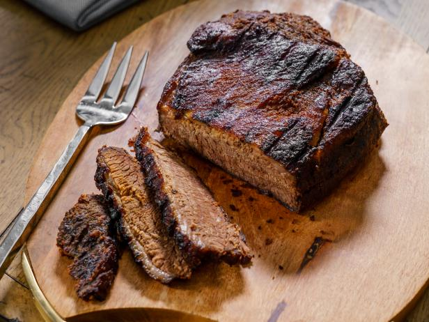

BBQ Brisket!

BBQ beef brisket is one of my favorite meals to cook! the process itself takes many hours and can go wrong instantly, but its worth learning to make i the end.
The recipe requires access to a BBQ smoker, a good choice of wood and dry rub, butcher paper, a dry cooler, and of course a nice cut of brisket.
Most of the work is going to be done upfront, at the beginning of the cook. Lets get started!
Required ingredients/utensils
- Brisket
- Smoker
- BBQ Rub
- Butcher Paper
- Dry Cooler
- Time and Patience
Recipe Steps
- Prep the brisket with a generous amount of your BBQ rub
- Rest for thirty minutes to one hour
- Place brisket fat side down on smoker at 200degrees fahrenheit
- Close lid and smoke for one and a half to two hours per pound of meat
- Take brisket off smoker and wrap in butcher paper
- Return brisket to smoker at 250degrees fahrenheit
- Cook till 180degrees fahrenheit internal temperature
- Take off smoker and place in dry cooler for two to three hours
- Slice and enjoy